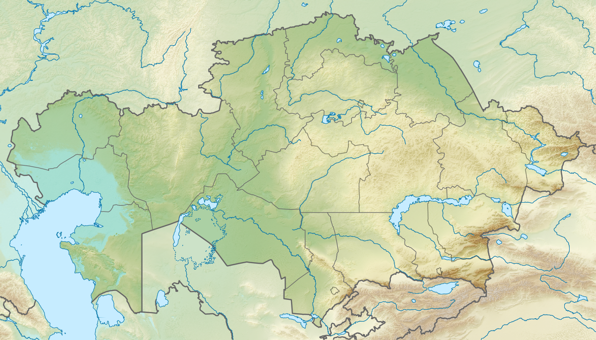

Бор дәуірінен бүгінгі күнге дейінгі геологиялық және биологиялық тарихтың виртуалды зертханасы
Жоба авторы
Базарова Арай
Қызылорда қ. №290 орта мектебінің 10-сынып оқушысы
Жоба жетекшісі
Оспанова Салтанат
№290 орта мектебінің тарих пәні мұғалімі, педагог-зерттеуші
Ғылыми кеңесші
Билалов Сейдали Умиртаевич
Қорқыт ата атындағы Қызылорда университеті, Археология және этнография ғылыми орталығының бас ғылыми қызметкері, PhD
Секциясы
Әлемдік мәдени мұра: өлкелік археологиялық жәдігерлерді зерттеу
Пәні
Қазақстан тарихы
Оқу орны
№290 орта мектеп
Бұл ғылыми жобада Сырдарияның төменгі ағысы мен Арал маңындағы ежелгі тіршілік іздері тарихи-өлкетанулық және палеонтологиялық тұрғыдан кешенді қарастырылады. Зерттеудің негізгі нысаны — Қызылорда облысының Төменгі Сырдария көтеріліміндегі бор дәуірі шөгінділері, Түлікiлі (Қанқазған) және Бостөбе типтес қазба орындары, тасқа айналған ағаштар, өсімдік қалдықтары, омыртқасыздар мен омыртқалылардың сүйек қалдықтары. Ғылыми әдебиеттер бұл өңірдің шамамен 90–70 млн жыл бұрын теңіз жағалауы, өзен арналары, жайылмалар мен құрлықтық экожүйелер алма-кезек дамыған күрделі табиғи кеңістік болғанын көрсетеді.
Жобаның жаңалығы — Сыр бойының тарихын тек адамзат өркениетінің тарихымен шектемей, одан әлдеқайда терең геологиялық уақытпен сабақтастыра түсіндіруінде. «Тасқа айналған әлем» ұғымы ғылыми мағынада фоссилизация, минералдану және шөгінді қабаттарда организм іздерінің сақталуы арқылы ашылады. Жұмыста далалық бақылауға арналған қауіпсіз алгоритм, мектеп музейіне арналған «Сырдың тас шежіресі» экспозициясының үлгісі және өлкетанулық маршрут ұсынылады.
Жоба нәтижелерін қорытындылау және оқушылардың білімін бекіту викторинасы
Сырдария өңірі (Қызылорда облысы және іргелес аумақтар) — Қазақстанның оңтүстік-батысында орналасқан, мезозой эрасының, әсіресе бор кезеңінің (шамамен 145-66 млн жыл бұрын) құпияларын сақтаған бірегей аймақ.
Бұл жобаның басты мақсаты — Сыр өңірінің палеонтологиялық мұрасын цифрлық форматта жүйелеу, тасқа айналған ежелгі жануарлар мен өсімдіктердің қалдықтары арқылы сол кездегі экожүйені қалпына келтіру және мектеп оқушыларының туған жер тарихына деген қызығушылығын арттыру.

Сырдария өңірінің бедерлі картасы